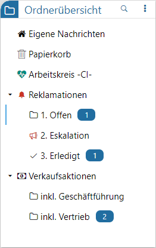

In der Ordnerübersicht wird die Ordnerstruktur des WinLine Share dargestellt und zusätzlich auf ungelesene Nachrichten hingewiesen. Hierbei stehen die folgenden Einträge immer zur Verfügung:
ü Eigene Nachrichten
ü Papierkorb
Weitere Ordner werden abhängig von den jeweiligen Berechtigungen dargestellt, wobei Rechte auf Benutzer und Gruppenbasis gewährt werden können.

Ø Ordnerstruktur
Die Ordnerstruktur kann maximal 3 Ebenen umfassen, wird alphanumerisch sortiert und dient als Zusammenfassungskriterium für die einzelnen Chats. Zusätzlich wird neben dem Ordnernamen auf ungelesene Nachrichten hingewiesen.
Hinweis
Die Anzeige der Ordner ist immer abhängig von den hinterlegten Rechten. Eine Ausnahme bildet hier das Recht auf Unterordner, d.h. hat man nur das Recht auf den Unterordner, so wird der übergeordnete Ordner trotzdem angezeigt, jedoch ohne die darin enthaltenen Chats oder den Zugriff auf die Ordneroptionen.
Ø Menü
Je nach ausgewählten Ordner stehen unterschiedliche Funktionen zur Verfügung, welche durch Anwahl des Menü-Buttons aufgelistet werden.
ü
Mit Hilfe dieses Eintrags können neue
Ordner für die aktuelle Ebene (ausgehend vom gewählten Ordner) angelegt
werden.
ü
Sind Unterordner gewünscht, so können
diese über "Unterordner anlegen" erzeugt werden (es stehen maximal 3 Ebenen zur
Verfügung). Ausgangspunkt ist hierbei immer der aktuell gewählte Ordner.
ü
Über diesen Eintrag können die Optionen des gewählten Ordners
angepasst werden.
ü
Mit Hilfe dieses Eintrags können Ordner,
inklusive aller enthaltenen Chats, gelöscht werden.
Achtung
Das Löschen der Ordner und Chats findet benutzerübergreifend statt. D.h. löscht ein Benutzer einen Ordner, so ist dieser für alle Benutzer nicht mehr im Zugriff. Gleiches gilt für Chats.
Ø Ordnersuche
Durch Auswahl der Lupe wird eine Suchzeile zur Verfügung gestellt. Durch Eingabe eines Suchbegriffs erfolgt eine Volltextsuche in den Ordnernamen, wobei der Fokus auf die jeweiligen Ordner gelegt wird. Die Suche wird durch Betätigen der Eingabetaste (Enter) ausgelöst. Erneutes Drücken der Enter-Taste führt zum nächsten Treffer usw.